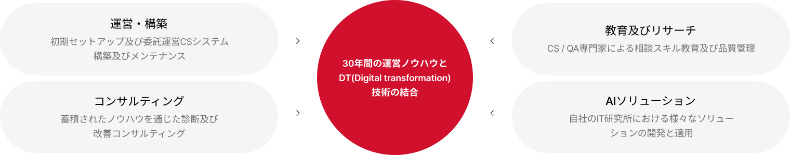
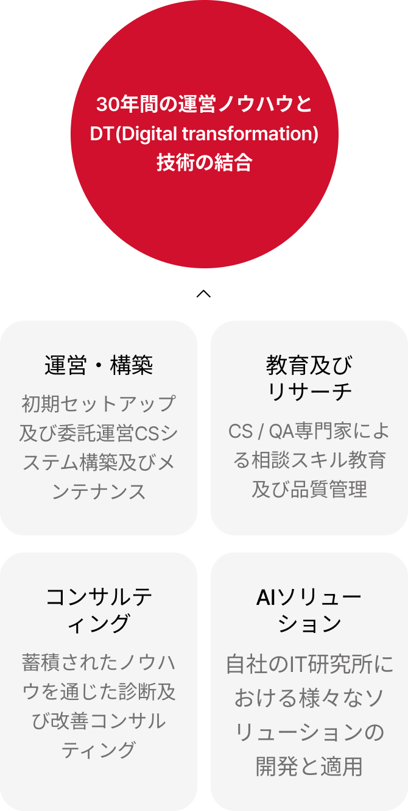

메인 이미지 입니다.
カスタマーセンターの運営をサポートする
CX
30年のノウハウに基づいて、カスタマーセンターの運営に必要な様々な業務をサポートします。
CX
トランスコスモスコリアは30年以上のコンタクトセンター運営ノウハウを通じて、企業に最適化された顧客関係管理(CRM)を提案します。専門オペレーターが電話、Eメール、チャットなど 様々なコミュニケーションチャンネルを通じて顧客のニーズを把握し、効率的かつ効果的なカスタマーサポートサービスを提供します。
主なサービス
トランスコスモスコリアは革新をリードする多様なデジタルサービスを提供します。
-
01カスタマーセンター運営
カスタマーセンターの運営に必要なスタッフ、システム、インフラの一式を提供する「フルアウトソーシング(Full Outsourcing)」から、問い合わせ及び管理運営スタッフのみを提供する「インハウスアウトソーシング(In-house Outsourcing)」まで、クライアント企業に合わせたビジネスを提供し、優れたカスタマーエクスペリエンスを提供します。
-
02グローバル拠点の統合運営
トランスコスモスグループのグローバル拠点を活用し、グローバルビジネスを行う企業にグローバル統合カスタマーセンタービジネスを提供します。グローバルブランドにふさわしいレベルのサービス品質を維持、管理することはもちろん、グローバル統合管理システムを通じて標準化されたサービスを提供します。
-
03ITサービスデスク運営
クライアント企業の社内システムについての単純な利用問い合わせだけでなく、機能改善対応、DBモニタリングなどのエンジニア処理領域のITシステム運営ビジネスを提供します。トランスコスモスコリアのCXpert CRM顧客相談ソリューションを基に、従業員と顧客の声(VOC)に耳を傾け、顧客の問い合わせ事項について迅速かつ正確に解決します。
-
04オペレーターの採用
募集内容掲載から人材推薦、面接、採用に至るまで人材採用の全ての段階を担うことで、クライアント企業の人事業務の効率を向上させます。多様な人材DBを確保し、欠員発生時にも即座に対応します。
特長
トランスコスモスコリアは、幅広い業界経験と最高の技術力を有しています。
-
自社構築センター運営
17の自社構築センターを含む全国70余りの拠点で多様な人材を保有・管理
-
最先端の情報セキュリティシステム
韓国コンタクトセンター業界初のオンライン決済グローバルセキュリティ標準規格(PCI DSS)認証を取得
-
コンタクトセンターに専門オペレーターを配置
最適なアウトバウンド時点/Channelの選定及び専門オペレーターの熟練したコミュニケーションスキルを提供